configuration bundle
A device asks for its bundle and gets the addons, the filters and the subtitle languages it is allowed. Short-lived, per device, and it never carries a credential.
one setup · every device · no media hosted
Lantern curates which addons are allowed and which filters to prefer, brokers a short-lived configuration bundle to each device, and keeps one ledger of who has paid and how many seats that buys. The bytes stay in the cache. We hold the configuration.
The honest trade: we depend on a third party for the media and cannot fix a stream that will not start. That dependency is named, not hidden.

A device asks for its bundle and gets the addons, the filters and the subtitle languages it is allowed. Short-lived, per device, and it never carries a credential.
Which addons are permitted, which filters are preferred, which catalogues are pinned. The manifest is data, not a release: a new addon is a config change.
Who has paid, at what tier, and how many seats that allows. A JSON file with atomic writes. Correct size of solution for a family.
billed monthly, cancel any time. every figure is a list price for one month.
The family holds the account. Storing that credential server-side is the one piece still ahead of the code.
Allowed addons, the filters to prefer — cached-only, so no peer traffic reaches a family device — and pinned catalogues, edited in one place.
A device asks for its bundle and gets one that expires in an hour. Nine devices, one manifest, no per-device fiddling.